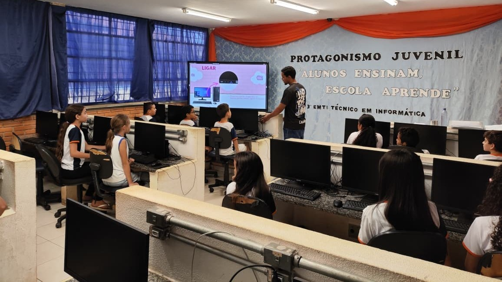

.jpeg)
Compartilhando conhecimentos
Os alunos tiveram a oportunidade de compartilhar conhecimentos básicos de informática, apresentando informações importantes e contribuindo para o aprendizado dos participantes.
Escola Estadual Maria Barbosa Leite
3º ANO • CURSO TÉCNICO EM INFORMÁTICA
COORDENAÇÃO PROF: Professor Kleber Moraes.
Um momento de aprendizado, troca de experiências e compartilhamento de conhecimentos que
fortalece a educação e valoriza o protagonismo dos estudantes da Escola Estadual Maria Barbosa Leite.
Nossa experiência
O projeto Alunos Ensinam, Escola Aprende tem como objetivo promover a troca de conhecimentos no ambiente escolar, valorizando o protagonismo dos estudantes e incentivando a aprendizagem colaborativa. Nesta ação, os alunos do curso Técnico em Informática foram responsáveis por ministrar uma aula sobre conhecimentos básicos de informática, compartilhando informações e orientações importantes sobre o uso de computadores e ferramentas tecnológicas. A atividade proporcionou aos participantes a oportunidade de ampliar seus conhecimentos na área da informática, além de aproximar os estudantes da prática de ensinar e compartilhar o que aprenderam ao longo de sua formação. A iniciativa reforça a importância da tecnologia na educação e demonstra como os conhecimentos desenvolvidos pelos alunos podem contribuir para a formação de toda a comunidade escolar.
Aprendizagem colaborativa. Incentivamos a troca de conhecimentos e novas experiências no ambiente escolar.
Compartilhando saberes. Os estudantes assumiram o papel de ensinar e contribuir com a aprendizagem.
Tecnologia na prática. Os conhecimentos de informática foram compartilhados com outros alunos.
Ensino e colaboração. Uma experiência que fortaleceu a comunicação e o aprendizado coletivo.
Confira os registros desse momento especial! Cada fotografia guarda momentos de interação, aprendizado, participação e compartilhamento de conhecimentos entre os estudantes da Escola Estadual Maria Barbosa Leite.
Os alunos tiveram a oportunidade de compartilhar conhecimentos básicos de informática, apresentando informações importantes e contribuindo para o aprendizado dos participantes.
.jpeg)
A atividade foi marcada pela troca de experiências e pela construção de novos conhecimentos, mostrando como a tecnologia está presente em diferentes situações do nosso cotidiano.

Os estudantes assumiram o papel de protagonistas da aprendizagem, colocando em prática os conhecimentos adquiridos durante sua formação e compartilhando-os com a comunidade escolar.
.jpeg)
Durante a aula, foram trabalhados conhecimentos básicos sobre informática, destacando a importância dos computadores e das ferramentas tecnológicas no ambiente escolar e na vida cotidiana.
.jpeg)
A iniciativa proporcionou um momento de interação e colaboração entre os participantes, criando um ambiente de troca de conhecimentos e experiências.